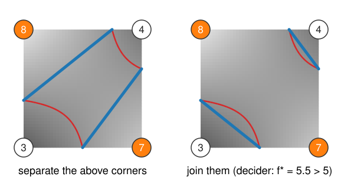

Level sets and marching squares
About this lecture
A threshold tells us which pixels belong to a bright object. Today we draw its boundary as a curve with sub-pixel precision, in 2D; the next unit does the same in 3D.
- The boundary at level c: the level set \{I = c\}, an isocontour.
- Marching squares: each 2 \times 2 cell on its own, 16 cases, crossing points by linear interpolation.
- The two saddle cases, and the asymptotic decider that resolves them.
- Measuring a contour: length, and the enclosed area by the shoelace formula.
- Real images: noise, blur, and the choice of c.
Slides titled The math give the formulas and proofs; the ideas are complete without them.
A boundary is where the image crosses a value
- A bright object on a dark background: inside I > c, outside I < c. The boundary is where I = c.
- The set of points \{(x, y) : I(x, y) = c\} is the level set of I at level c. In 2D it is a set of curves, an isocontour: the contour lines of a height map, with I as the height. In 3D it is a surface (next unit).
- Thresholding at c labels whole pixels (the thresholding day). The level set lies between the pixel centres: where exactly between a pixel of 40 and one of 200 does I pass 120?
- One c gives one boundary; a different c moves it, merges or splits pieces. Choosing c comes back in the last unit of the day.
We only know the image at the pixels
Treat pixel centres as grid points and look at one cell of 2 \times 2 pixels at a time.

- Mark each corner above (orange, I > c) or below c. Four corners, two states: a 4-bit case index, 2^4 = 16 cases. Corners 0, 1, 2, 3 = top-left, top-right, bottom-right, bottom-left, bit k = corner k.
- An edge whose two corners disagree is crossed by the contour, exactly once. The case says which edges are crossed and how to connect them.
- Cases 0 and 15: no contour. Cases 5 and 10: four crossings, two ways to connect them (later).
Where on the edge?
Along an edge from corner a (value I_a) to corner b (value I_b), assume I changes linearly. It reaches c at the fraction
t = \frac{c - I_a}{I_b - I_a}
of the way from a to b.
- Example: I_a = 40, I_b = 200, c = 120: t = 80/160 = 0.5. With c = 80: t = 0.25, closer to the dark pixel.
- Midpoint rule (t = \tfrac12 always): the contour of the thresholded image. It only knows above/below, so it is blocky, with steps of half a pixel.
- Linear interpolation uses the grey values: a smooth contour, accurate to a fraction of a pixel when the image is smooth.
The math: the crossing point
The straight line through (0, I_a) and (1, I_b) is f(t) = I_a + t\,(I_b - I_a). Setting f(t) = c:
t = \frac{c - I_a}{I_b - I_a} \in (0, 1)\quad\text{when } c \text{ lies strictly between } I_a \text{ and } I_b.
- The point is \mathbf p = \mathbf p_a + t\,(\mathbf p_b - \mathbf p_a).
- Computed from the same two values, it is the same point whichever of the two neighbouring cells computes it.
- Along a cell edge the bilinear interpolant of
images/is this straight line, so the crossing points lie exactly on the level set of the bilinear interpolant.
Marching: every cell on its own
- Visit the cells one by one (“marching” over the grid). Each cell needs only its 4 corners: no global step, every cell could be processed in parallel.
- Two neighbouring cells share an edge, so they compute the same crossing point there: the segments join up. The result is a set of closed curves, or curves that end at the image border.
- Pad the image with a frame of background pixels, and every contour closes.
- Orientation: connect each segment so that the bright side is always on the same side. Then outer boundaries run one way round and the boundaries of holes the other way: that sign is what makes the area formula work.
Try it: marching squares by hand
Saddle cells: two valid answers

- Case 5 (corners 0 and 2 above) and case 10 (corners 1 and 3): diagonal corners above, the other two below. Four crossings, two ways to pair them:
- separate the two bright corners (two small bright pieces), or
- join them through the cell (one bright band, the dark corners cut off).
- The corners alone cannot decide. A fixed rule (always separate) still gives closed, consistent curves, but sometimes the wrong topology: two objects where there is one, or the reverse.
The asymptotic decider
Use the values, not only the signs. The bilinear interpolant inside the cell (from images/) has curved level lines: hyperbolas. In a saddle cell it has a saddle point with value f^\ast:
- if f^\ast > c, the middle of the cell is above c: the bright corners are joined;
- if f^\ast < c, the middle is below c: they are separated.
Example (corners clockwise from top-left: 8, 4, 7, 3, c = 5): f^\ast = (8 \cdot 7 - 4 \cdot 3)/(8 + 7 - 4 - 3) = 44/8 = 5.5 > 5: join. With 6 instead of 8 and 6.5 instead of 7: f^\ast = 27/5.5 = 4.91 < 5: separate.
Two neighbouring cells never disagree: the decision is made inside one cell (Nielson & Hamann, 1991).
The math: the saddle of the bilinear interpolant
On the cell [0, 1]^2 with corner values I_{00}, I_{10}, I_{01}, I_{11} (first index x):
f(x, y) = I_{00}(1-x)(1-y) + I_{10}\,x(1-y) + I_{01}(1-x)\,y + I_{11}\,xy = A + Bx + Cy + Dxy,
with D = I_{00} + I_{11} - I_{10} - I_{01}. Setting \partial_x f = B + Dy = 0 and \partial_y f = C + Dx = 0 gives the saddle at x^\ast = -C/D, y^\ast = -B/D, with value
f^\ast = A - \frac{BC}{D} = \frac{I_{00}I_{11} - I_{10}I_{01}}{I_{00} + I_{11} - I_{10} - I_{01}}.
- f - f^\ast = D\,(x - x^\ast)(y - y^\ast): the level lines are hyperbolas with asymptotes x = x^\ast and y = y^\ast (hence the name).
- In a saddle case the two bright corners lie in opposite quadrants around (x^\ast, y^\ast); they are connected inside the cell exactly when the region \{f > c\} contains the centre point of the hyperbolas, i.e. when f^\ast > c.
Measuring a contour
- Length: the sum of the segment lengths.
- Enclosed area: the shoelace formula (from the labelling day’s shape features, restated here): for a closed polygon (x_1, y_1), \dots, (x_n, y_n), A = \tfrac12 \sum_{i=1}^{n} (x_i\,y_{i+1} - x_{i+1}\,y_i), \qquad (x_{n+1}, y_{n+1}) = (x_1, y_1).
- Example: the diamond (1, 0), (2, 1), (1, 2), (0, 1): \tfrac12\big[(1 - 0) + (4 - 1) + (1 - 0) + (0 - 1)\big] = 2.
- Signed: one direction round gives +, the other -. With the orientation of marching squares, holes count negative automatically; summing over all contours gives the bright area.
- Compare: counting pixels above c gives almost the same area, but the pixel boundary (a staircase) has the wrong length.
The math: why the shoelace works
- Each term \tfrac12(x_i y_{i+1} - x_{i+1} y_i) = \tfrac12\det\begin{bmatrix} x_i & x_{i+1} \\ y_i & y_{i+1}\end{bmatrix} is the signed area of the triangle (origin, \mathbf p_i, \mathbf p_{i+1}). Summed around the polygon, the parts outside cancel.
- Equivalently, Green’s theorem: A = \oint \tfrac12(x\,dy - y\,dx), evaluated exactly on straight segments.
- This is the 2D version of the divergence theorem. The last unit of the day uses the 3D version to get the volume of a closed surface from its triangles.
Real images: noise and blur
- Noise: every pixel that noise pushes across c starts a tiny contour of its own, and the boundary becomes ragged. Lengths explode; areas are almost unaffected (the specks inside and outside roughly cancel).
- Blur first (Gaussian,
kernels/): the noise is averaged away, contours become smooth and few. Too much blur rounds corners, moves the contour of small objects, and breaks or closes thin necks. - c decides the topology: two blobs joined by a valley are one contour below the valley’s height and two above it.
Try it: contours of an image
Summary
- The boundary at level c is the level set \{I = c\}: curves in 2D, surfaces in 3D.
- Marching squares: per cell, 4 corners → case index (16 cases) → crossed edges → segments. Shared edges make the curves close up.
- Crossing points by linear interpolation t = (c - I_a)/(I_b - I_a); the midpoint rule gives the blocky boundary of the thresholded image.
- Saddle cases 5 and 10 are ambiguous; the asymptotic decider joins the bright corners when the bilinear saddle value exceeds c.
- Length by summing segments, area by the shoelace formula; noise makes many tiny contours, blur first.